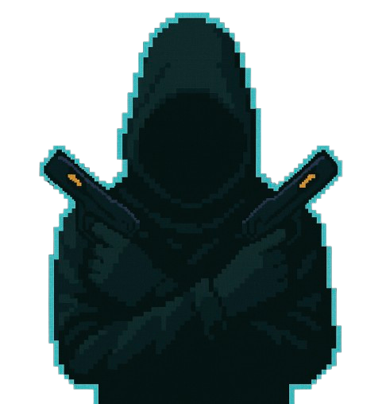

¿Qué harías?
Si el destino del mundo dependiera de un solo hacker. The Final Hack, un roguelite de acción, con un combate cuerpo a cuerpo similar al de Dead Cells y una vista desde arriba inspirada en The Binding of Isaac. Es un juego donde encarnas a un hacker de élite con nombre clave Cipher, el encargado de infiltrarse a una base de seguridad robada por "The Core" para evitar una catástrofe mundial.
Cada partida te sumergirá en desafiantes acertijos y un combate intenso. Además de un sistema de progresión consiguiendo objetos que pueden ser permanentes, los cuales serán de ayuda para próximas partidas. ¿Estás listo para hackear el sistema y salvar el mundo?

¿En que consiste?
The Final Hack es un juego controlado con el teclado y centrado en el combate tanto cuerpo a cuerpo como a distancia. Cada nivel contiene una sala principal con tres subsalas, las cuales deben completarse para abrir la puerta del jefe.
Al superar los desafíos de cada subsala, el jugador recibe un power up que le ayudará en el combate final. Las armas, enemigos, retos y salas se generan de forma aleatoria, aportando variedad a cada partida.
Algunas recompensas, como las mejoras de vida, son permanentes y se conservan incluso al morir. El objetivo final es llegar hasta el núcleo enemigo y robar la información de The Core.